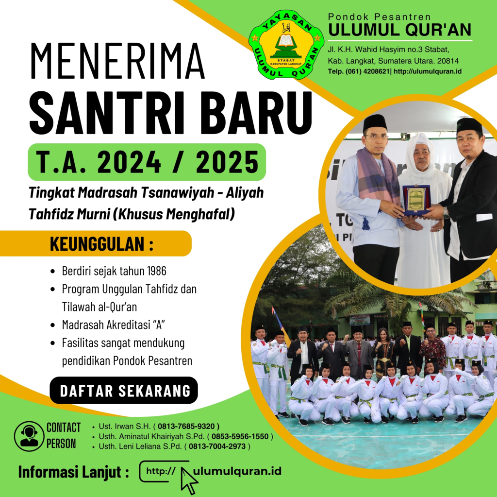

Selamat Datang Di Halaman Dashboard Pendaftaran Santri Baru Ulumul Qur'an

Informasi Pendaftaran Santri Baru Pondok Pesantren Ulumul Qur'an T.A 2024/2025
A. Waktu Pendaftaran
- Tahap 1 : Pada Tanggal 1 Februari s/d 30 Maret 2024
- Tahap 2 : Pada Tanggal 22 April s/d 30 Juni 2024
Jika kuota sudah terpenuhi sebelum batas akhir tanggal tersebut di atas, maka penerimaan akan di tutup.
B. Alur Pendaftaran
- Pengisian Formulir Data Diri
- Melampirkan Dokumen
- Pembayaran Administrasi pendidikan sebesar Rp.5.750.000,- (Belum termasuk biaya pendaftaran)
- Khusus santri MTs Ulumul Qur'an yang melanjutkan ke MAS Ulumul Qur'an biaya administrasi pendidikan sebesar Rp.5.350.000,- ( Belum termasuk biaya pendaftaran)
- Biaya uang masuk di atas, sudah termasuk biaya bulanan sampai dengan bulan agustus 2024
- Biaya bulanan berikutnya mulai dibayarkan pada bulan September 2024 sebesar Rp.950.000,-
C. Persyaratan
- Mengisi Formulir Pendaftaran
- Menyerahkan foto ijazah yang di telah legalisir.
- MTs : Ijazah MI/SD (HARUS TERBACA JELAS)
- MAS : Ijazah MTS/SMP (HARUS TERBACA JELAS)
- Menyerahkan foto surat keterangan lulus menyusul yang telah dilegalisir.
- Menyerahkan foto akte kelahiran dan foto kartu keluarga.
- Surat Keterangan Memiliki NISN ( Nomor Induk Siswa Nasional ) dari sekolah asal/foto bagian depan raport yang terlampir NISN
- Biaya Pendaftaran = Rp.250.000,-
- Biaya Pendaftaran Alumni MTs Ulumul Qur'an = Rp. 150.000,-